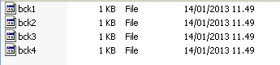
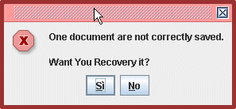

LabelOne Studio e BuilderOne Salvano automaticamente i propri documenti per consentire un recupero in caso di blocco accidentale del PC. Il salvataggio viene effettuato nella cartella TempBackup. Nel caso di etichette il file viene indicato con bck1, bck2... |
 L'ultimo backup è il più recente, quindi quello che può essere usato per recuperare il lavoro che si stava facendo. |
Per recuperare l'etichetta è sufficiente fare ripartire il programma. Verrà mostrata una finestra.  Accettando si otterrà che l'etichetta non salvata verrà aperta e mostrata nell'editor. A questo punto sarà possibile salvarla e continuare l'editing. |